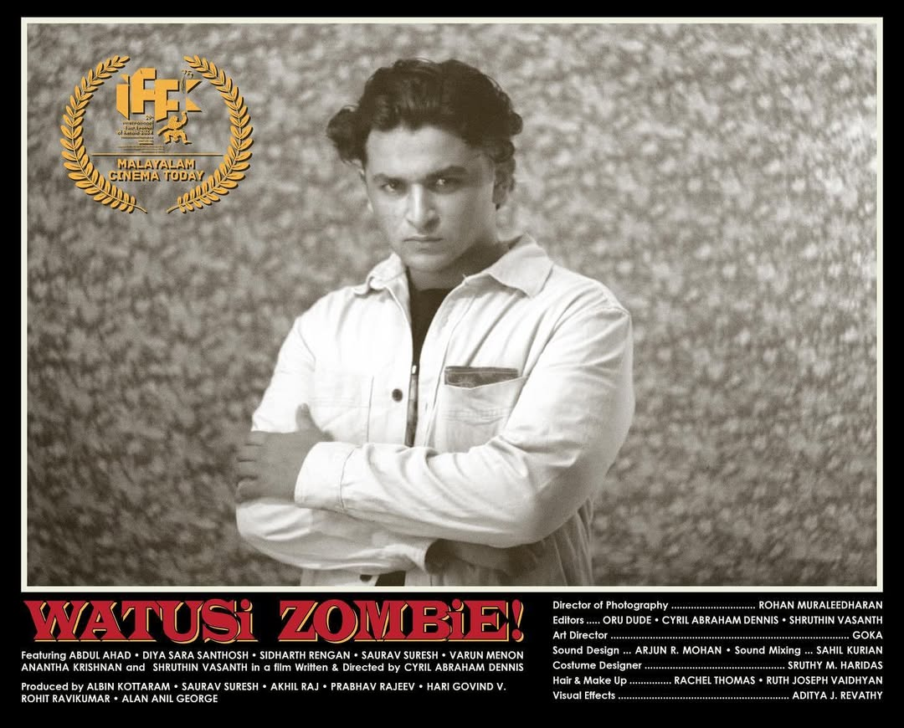
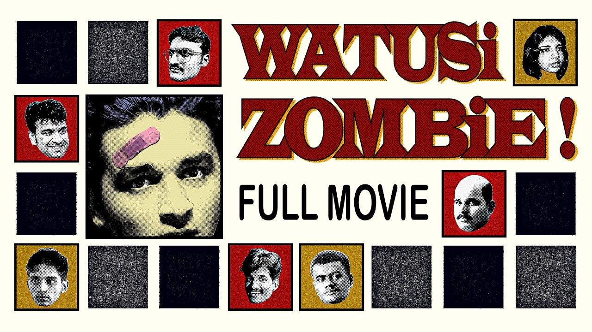
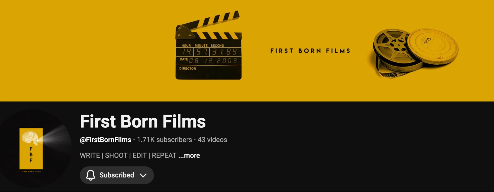
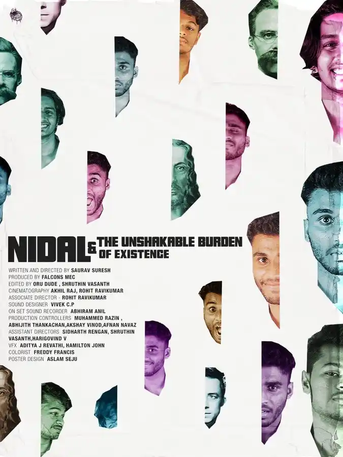
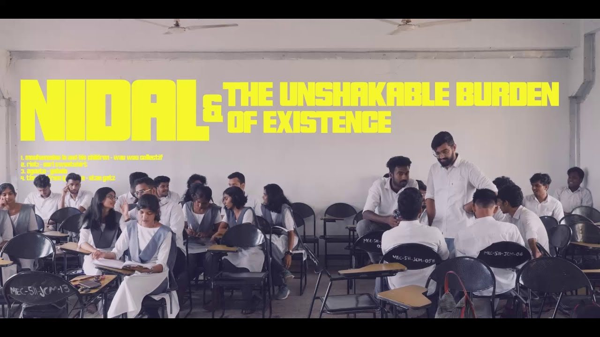
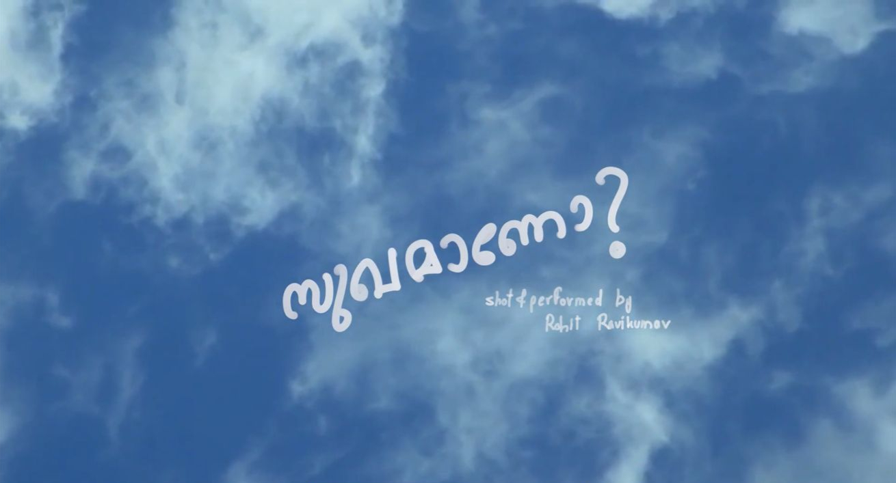
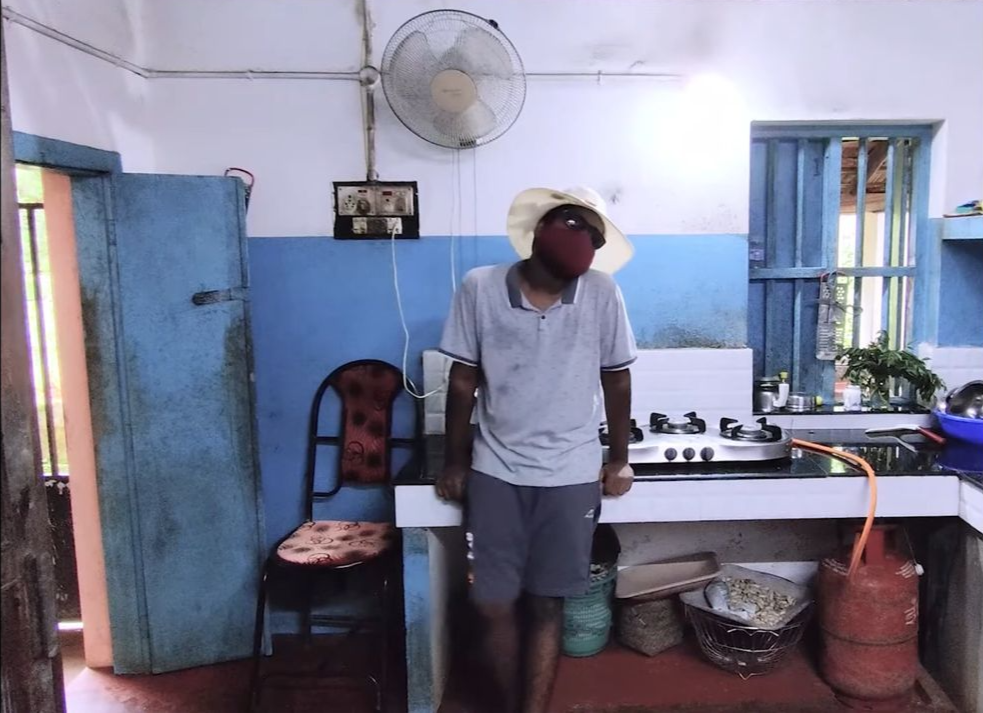

Frame012
Sept 2026
Freelance videographer
Allrounders
shooting freelance for a Kannada YouTube channel of podcasts, travel vlogs and fun challenges.
for allrounders · youtube ↗
what i'm shooting, cutting and directing, as it happens.
No frames here yet
Photography lives on Flickr for now.
Frame012
Sept 2026
shooting freelance for a Kannada YouTube channel of podcasts, travel vlogs and fun challenges.
for allrounders · youtube ↗
Frame011
Mar – Sept 2026
shooting video for a creative studio that works with conscious, sustainable and impact-led brands.
INSTAGRAM · @STUDIO_URLIfor studio urli
Frame010
June 2026
aerial footage of Itanagar in the early monsoon, shot on a DJI Mini 4 Pro for a travel agency in Arunachal Pradesh.
WATCH · 0:42 · DJI MINI 4 PROfor a travel agency, itanagar, arunachal pradesh
Frame009
May 2026
photos from a trip through Meghalaya — mossy gorges, waterfalls, caves and misty hills.
Frame008
May 2026
shooting and editing content for a gym in Arunachal Pradesh, including a trainer showreel for Rishiraj Baruah.
for genius fitness arena, arunachal pradesh
Frame007
Feb 2026
video editor for a real estate investing advice channel based in Dubai.
for mohammed zohaib, dubai — cut remotely
Frame006
Dec 2025
IFFK 2025 · Selected & screened
a movie me and my friends produced, selected and screened at the International Kerala Film Festival in 2025.


WATCH · FULL MOVIEwith kitchen sink drama, kochi
Frame005
Feb 2025
photos from a trek through the Nepal Himalaya — snow peaks, glacial valleys, stupas and prayer flags.
Frame004
2024
freelance videography and production work for the newly set up vox6 studios in Kochi.
VOX6STUDIOS.COMfor vox6 studios, kochi
Frame003
2023
part of the podcast team on the first – born films YouTube channel, on the panel and in the edit.

YOUTUBE · FIRST – BORN FILMSwith first – born films
Frame002
2022
Best Short Film · Layatharang 2022
a Malayalam short, subtitled, made with friends in my last year of college. three months of passion project.


WATCH · 18:18 · ENG SUBSwith friends, final year of college
Frame001
2021
Best Short Film · Layatharang 2021
a 10 minute Malayalam lockdown short for an online arts festival, inspired by a poem. shot at my old ancestral house in Kerala on my mobile phone, and performed by me because of the curfew.

WATCH · 13:23
lockdown, kerala